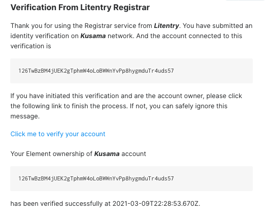

How To Verify Your Identity
Litentry Registrar Support: Element Room or registrar-support@litentry.com
Litentry Registrar index on Kusama is 4, and the service fee is 0.04KSM.
In the Twitter verification process, users need to follow the Litentry official registrar account, namely Litentry Registrar (@LitentryReg).
Introduction
The user's account (public key, wallet address) on the blockchain can remain anonymous since it is loosely connected with the user's identity. However, a user with high reputation can be trusted by the community in the Polkadot ecosystem when he plans to be a validator or a councilor. In this document, we want to introduce a registrar service that focuses on automatic verifications, leveraging well-designed cryptographical challenges to further reduce human interventions. At the moment, Litentry registrar focuses on providing judgment with confidence for a user's display name, email, twitter, or element name (previously called riot).
User Interaction
In this section, we will introduce the user's identity verification process step by step. Firstly, users need to set their identity information on the chain. Then, they can request a registrar to provide identity judgment. Users declare a maximum fee and the registrar they are willing to pay and verify for the judgment. After that, the dedicated registrar can ascertain.
Setting an On-chain Identity
Go to the Accounts page in Polkadot-JS Apps Polkadot-JS Apps. The easiest way to add the built-in fields is to click the vertical three dots next to one's account and select "Set on-chain identity".

Figure 1.1 Set Onchain Identity
A popup will appear, offering the default fields. Currently, Litentry registrar only supports the following fields:
display nameemailtwitterelement (formerly known as riot)
**In the Twitter verification process, users need to follow the Litentry official registrar account, namely Litentry Registrar (@LitentryReg).Otherwise, they cannot receive the message from the Litentry registrar. **
Figure 1.2 Set Identity
Once users have filled in the information, they would like to store on-chain, click Set Identity to submit the transaction.
Now Users have set the identity information on-chain, but that is not verified yet, so they should see a little gray icon beside users name.

Figure 1.3 Account Example
It is the time to interact with the Litentry's verification bot by submitting the judgment request to the Litentry Registrar.
Judgement Request
Go to Developer->Extrinsic and select your account to submit the identity -> requestJudgement(reg_index, max_fee) transaction. This will request the registrar to validate the information you set on-chain earlier. The reg_index is the index of the registrar. For Litentry, use 4. The max_fee is the amount KSM to pay the registrar. Litentry Registrar service fee is 0.04 KSM.

Figure 1.4 Judgement request
Verification Services
Since we provide the Email, Element and Twitter verification in our registrar at this moment, you will receive verification requests from those platforms.
Email Verification
Users will receive an email called "Litentry Verification Service". Figure 1.5 is an example of email verification. Users only need to click the button "Verify Email Now" to complete proof of email address. Then they will receive another confirmation email that shows the email has been verified successfully.

Figure 1.5 Email Verification Example
Element Verification
As for Element, an invitation will be sent from the bot named "litentry-bot". Once the user accepts the invitation, "litentry-bot" will send a verification link. Users only need to click the link to complete verification of the element account. When it proves the user is the account owner, they will receive a confirmation message such as "Verified successfully" (see the figure below).

Figure 1.6 Element Verification Example
Twitter Verification
In the Twitter verification process, users need to follow the Litentry official registrar account, namely Litentry Registrar (@LitentryReg). Users could also set their accounts to receive any private conversation in their privacy settings. Otherwise, they cannot receive the message from the Litentry registrar. Litentry Registrar will send a direct message associated with a verification link to the user. Once the verification link is clicked, the verification of Twitter is completed, and you should receive a successful verification message. The following figure is an example of the Twitter account verification process.

Figure 1.7 Twitter Verification Example
If everything has been verified successfully, you would see your account verification status has been marked as "reasonable" with a green tick icon on the account. And congratulations! Your identity should now show as a green "verified" checkmark on Polkadot-JS Apps.
Registrar Fee
It is important to notice that no KSM are sent to the registrar at any time. You should NOT send or transfer funds. When calling the requestJudgement, the registrar fee will be locked and put aside. It will be transferred to the registrar only after the registrar finishes the judgment job. After all, we are using a trustless system. The judgement fee of Litentry Registrar is 0.04KSM.